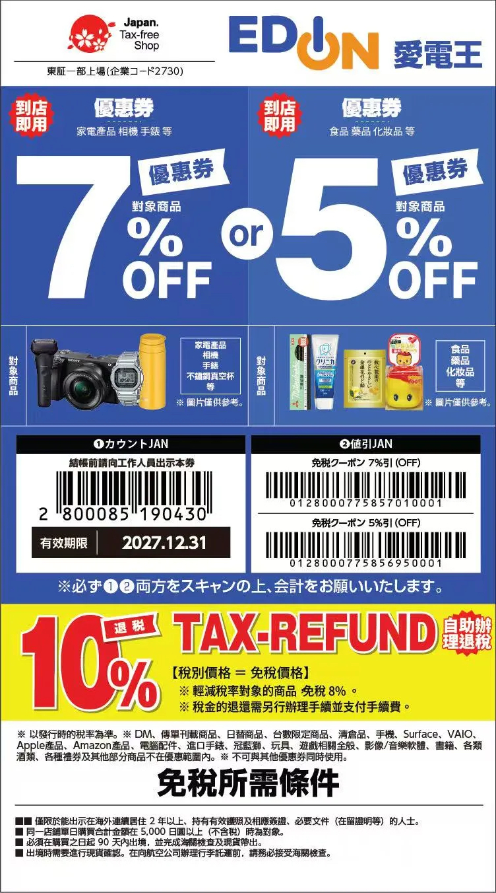
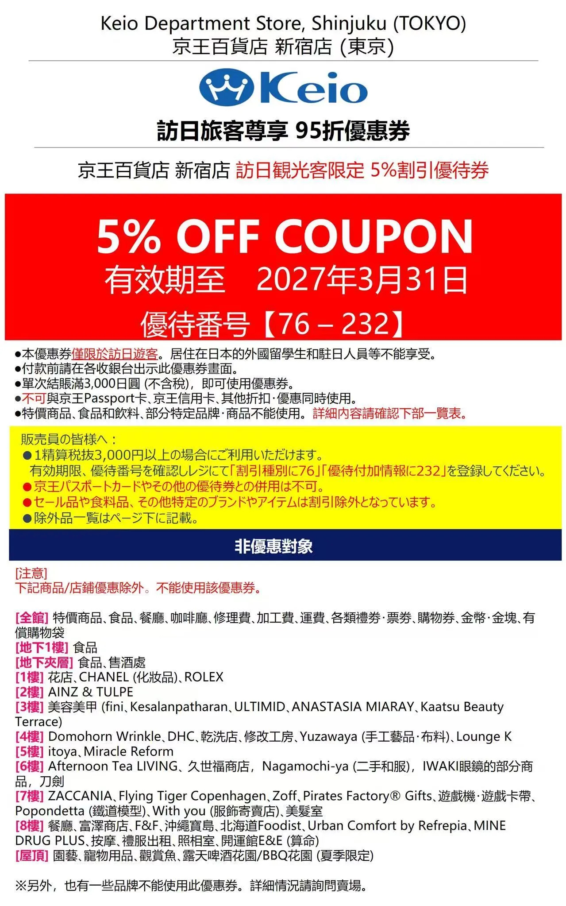
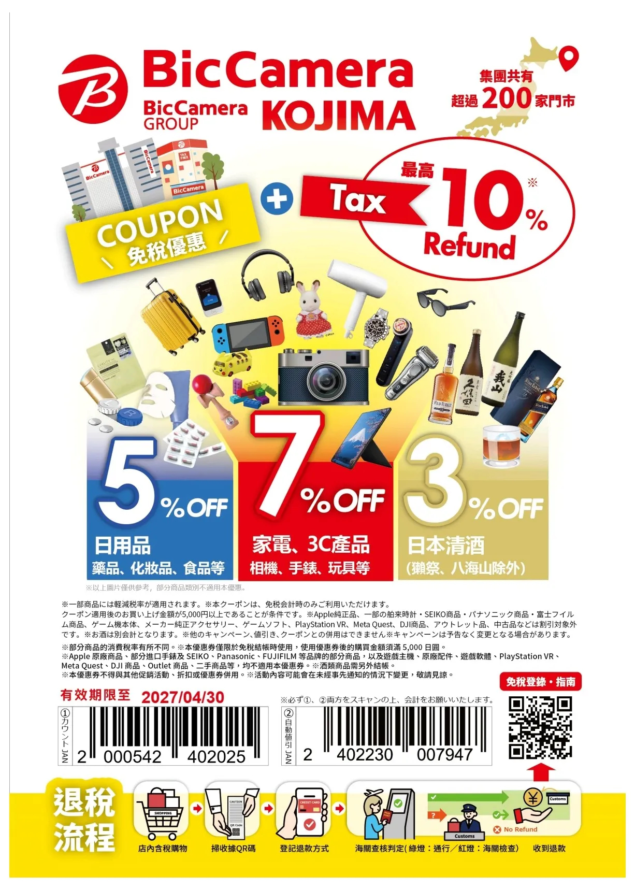
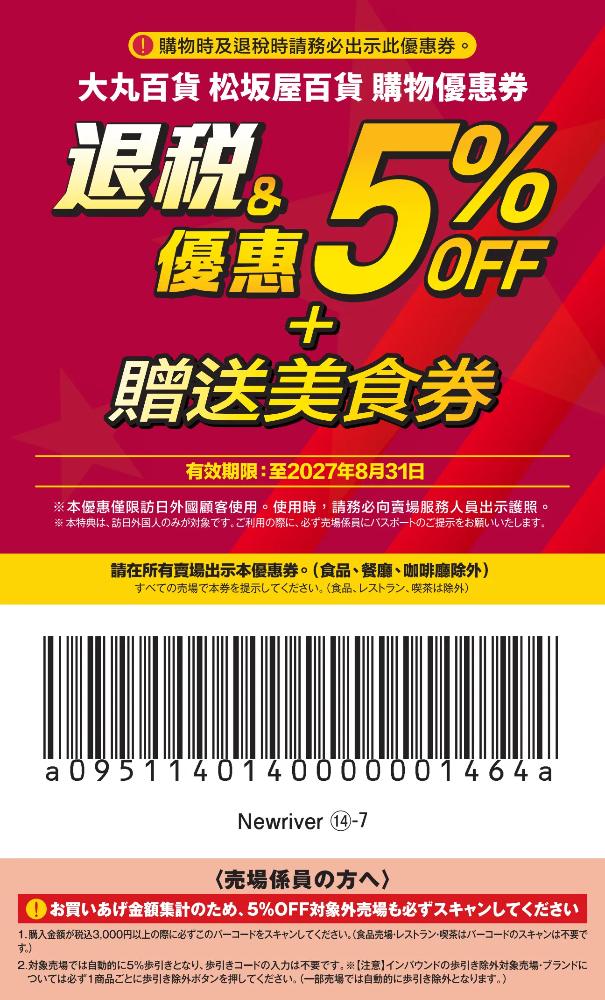
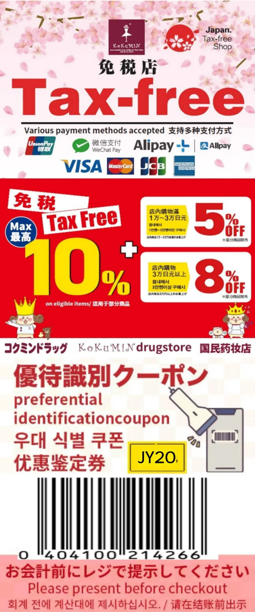
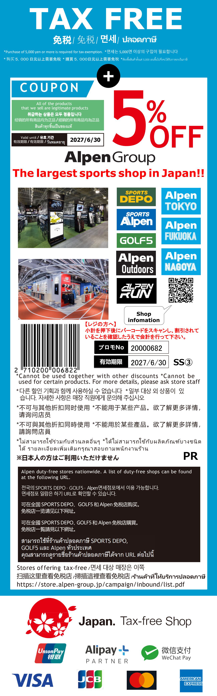
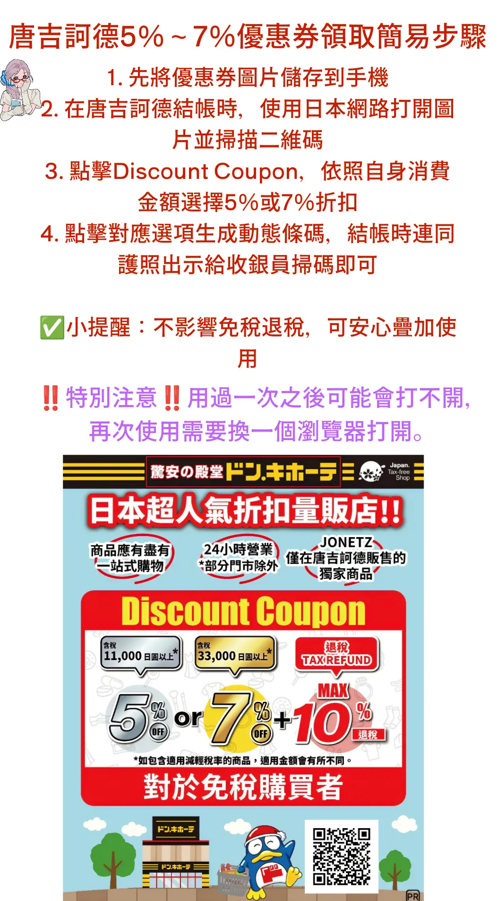
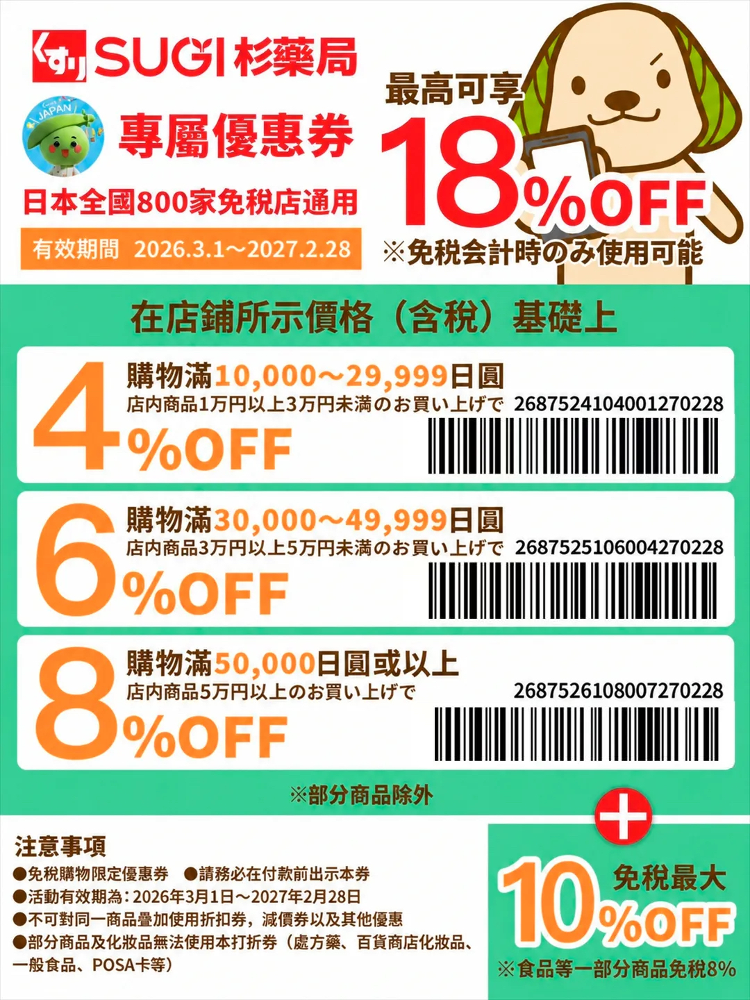
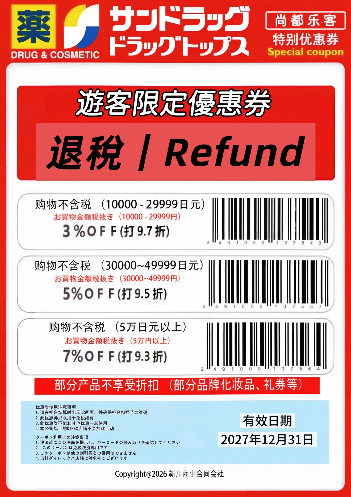

EDION愛電王
7%或5%，依品類；圖示至2027/12/31
品類排除、付款與新制退款條件須向門市核對。
查看網友提供券面原圖
另開原圖／放大
適用本次2026/12/5–12/13旅程｜官方查核2026/11/17。主要閱讀為中文；券面原文只作輔助。
2026/11/1起已改為退款制。本次12月旅程不能沿用「店內結帳直接免10%」的舊流程。符合資格者，在同一免稅店、同一天未稅購物合計達¥5,000，辦理購買登錄，並於購買日起90日內出境完成海關確認，才可依店家／平台程序退款。
12/13在新千歲：含退稅商品的行李，先完成海關確認與可能查驗，再交航空公司託運。不要先把商品交出去後才找退稅機。店家退款登錄、海關確認及退款入帳是不同步驟。
消費稅不是含稅價直接打九折：10%稅率商品，未稅¥10,000＋稅¥1,000＝支付¥11,000，稅額是¥1,000；不是退¥1,100。食品等可能適用8%，另有平台手續費，實收退款以交易紀錄為準，優惠券與退稅不能直接相加成保證折扣。
保留原目標12:20前到國際線航廈，15:20起飛；退稅查驗與報到共用這段緩衝，資料不齊或排隊時取消非必要購物。航空公司報到／託運截止仍優先確認。
海關確認機官方列06:00起至關閉時間；國際線3F另有Cash Japan，櫃台列07:00–20:00，只適用該業者合作交易，不代表所有店都能機場領現金。位置與營業以現場最新指標為準。
以下為使用者提供圖片的券面紀錄，並非本次已經門市驗證可用。圖上「10%免稅」「最高18%」等標語可能沿用舊制；實際折扣、指定分店、掃碼方式、期限與新制退款條件，付款前請門市確認。點開原圖再放大查看條款，不把圖示期限當作全品項適用保證。
7%或5%，依品類；圖示至2027/12/31
品類排除、付款與新制退款條件須向門市核對。

7%；圖示至2027/3/31
指定商品除外，與退稅的實際組合由門市確認。
5%；圖示至2027/3/31
東京新宿，非這次北海道動線，不因此新增購物點。

3%／5%／7%依品類；圖示至2027/4/30
依分店／品類及排除商品核對，不保證所有商品7%。

5%及美食券；圖示至2027/8/31
圖示購物／退稅時出示；精品、食品等排除與門檻另確認。

圖示店內購物1萬至未滿3萬5%、3萬以上8%；期限未辨識
券面門檻的計算基準與新制可否使用須店員確認。

5%；圖示至2027/6/30
僅適用免稅店與指定商品，不能假設所有Outlet／折扣品可疊加。

圖示含稅¥11,000起5%、¥33,000起7%；期限未列
圖片是領券教學，先開官方動態優惠券；截圖不等於可掃的有效券。

圖示含稅1萬–29,999：4%；3萬–49,999：6%；5萬起8%；至2027/2/28
圖上最高18%不是全商品18%折扣；免稅須走新制，優惠排除品另查。

圖示未稅1萬–29,999：3%；3萬–49,999：5%；5萬起7%；至2027/12/31
部分化妝品／禮券等不適用，以門市可掃描及當日條款為準。

不在公開頁面填護照、付款卡、退款帳戶或個人購買QR；操作請使用店家指引及官方網站。優惠券圖片只是購物參考，不會替你購買、登錄或提交退稅。